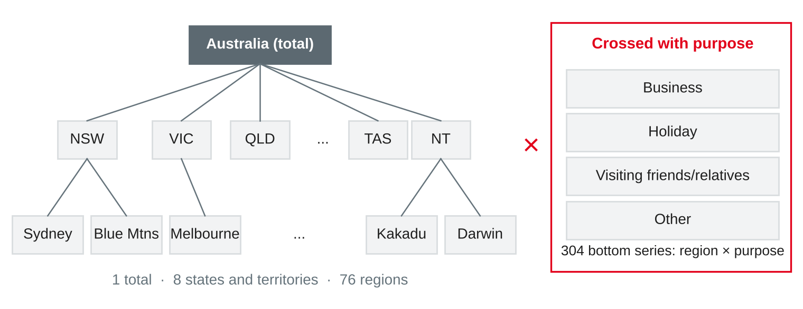
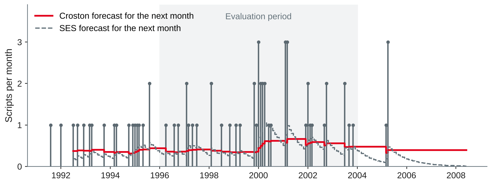
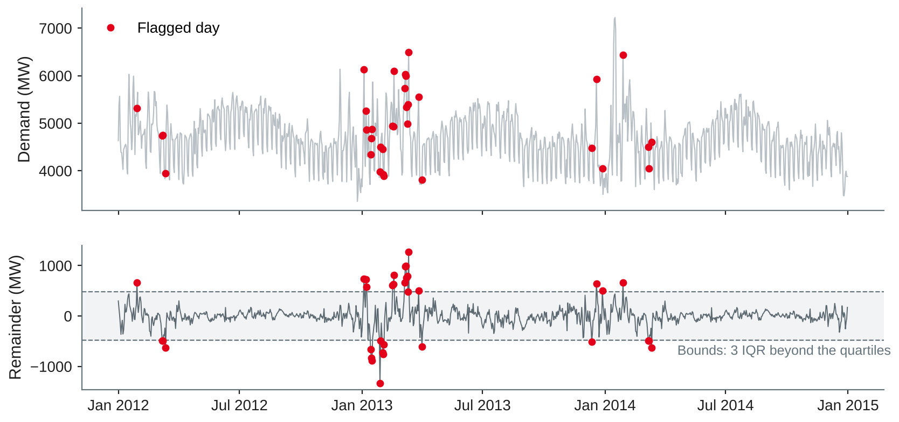

Data Analytics
Global models for many series · hierarchies and reconciliation · intermittent demand · anomaly detection · choosing a method · portfolio notebook 3
DHBW Mannheim · Data Science and Artificial Intelligence · Semester 5
| Daily demand, 26 folds in 2014 | MAE (MW) |
|---|---|
| SARIMA (session 12) | 271 |
| Gradient boosting: calendar + lags | 245 |
| + temperature climatology (ex ante) | 228 |
| + observed temperature (ex post) | 145 |
Today's question: what changes when a company needs forecasts for hundreds of series at once — and how do we choose the method for a use case?
One model per series — or one model for all?
Based on Makridakis et al. (2022), Januschowski et al. (2022) and Hyndman and Athanasopoulos (2021, Section 11.1).
Local
One model per series, e.g. ETS or SARIMA fitted 304 times. Adapts to each series; parameters grow with the number of series; short series give unstable fits.
Global
One model for all series, trained on windows from every series (scaled to a common level). Learns shared patterns; works for short series and new products; complexity independent of the number of series.
Based on Montero-Manso and Hyndman (2021) and Januschowski et al. (2022).
URL = ("https://raw.githubusercontent.com/vincentarelbundock/Rdatasets/"
"1dcc2bf5f955cc1224a3e1307256e1fe86b68dae/csv/tsibble/tourism.csv")Own analysis with data from Wang et al. (2020), loaded from Arel-Bundock (n.d.).
| Test 2016–2017, mean MASE | Total | State | Region | 304 bottom | All 425 |
|---|---|---|---|---|---|
| Seasonal naive (each series) | 1.96 | 1.40 | 1.18 | 1.17 | 1.18 |
| ETS per series, summed up | 3.31 | 2.04 | 1.24 | 0.99 | 1.11 |
| Global linear AR, summed up | 1.04 | 1.34 | 1.12 | 1.01 | 1.05 |
| Global gradient boosting, summed up | 1.29 | 1.32 | 1.10 | 1.01 | 1.04 |
Own analysis with statsmodels (Seabold & Perktold, 2010) and scikit-learn (Pedregosa et al., 2011); data from Wang et al. (2020); method based on Montero-Manso and Hyndman (2021).
Forecasts that add up

Own illustration based on Hyndman and Athanasopoulos (2021, Section 11.1); data from Wang et al. (2020).
| ETS forecast of | Total |
|---|---|
| The total series itself | 25,692 |
| Sum of the 8 state forecasts | 25,663 |
| Sum of the 304 bottom forecasts | 24,560 |
Own analysis with statsmodels (Seabold & Perktold, 2010); data from Wang et al. (2020); based on Hyndman and Athanasopoulos (2021, Section 11.3).
| Approach | Idea | Uses |
|---|---|---|
| Bottom-up | Forecast the bottom, add up | Only bottom forecasts |
| Top-down | Forecast the total, split by proportions | Only the total |
| Middle-out | Forecast one middle level, sum up and split down | One level |
| Optimal reconciliation | Adjust all base forecasts as little as possible so they add up | All levels |
Based on Hyndman and Athanasopoulos (2021, Sections 11.2–11.3) and Wickramasuriya et al. (2019).
| Test 2016–2017, mean MASE | Total | State | Region | 304 bottom | All 425 |
|---|---|---|---|---|---|
| ETS base (incoherent) | 1.71 | 1.34 | 1.12 | 0.99 | 1.04 |
| Bottom-up | 3.31 | 2.04 | 1.24 | 0.99 | 1.11 |
| OLS | 1.75 | 1.32 | 1.00 | 1.00 | 1.01 |
| WLS (structural) | 2.27 | 1.51 | 1.04 | 0.98 | 1.02 |
| MinT (shrink) | 2.18 | 1.47 | 1.03 | 0.93 | 0.99 |
Own analysis with statsmodels (Seabold & Perktold, 2010); data from Wang et al. (2020); methods from Wickramasuriya et al. (2019); same setup as Hyndman and Athanasopoulos (2021, Section 11.4).
A company sells in two regions, A and B. Base forecasts for next month (units):
| Total | A | B |
|---|---|---|
| 100 | 70 | 40 |
When zeros dominate — and when a value should not be there
| CV² < 0.49 | CV² ≥ 0.49 | |
|---|---|---|
| ADI < 1.32 | Smooth | Erratic |
| ADI ≥ 1.32 | Intermittent | Lumpy |
Based on Syntetos et al. (2005), Syntetos and Boylan (2005) and Hyndman and Athanasopoulos (2021, Section 13.2); data from O'Hara-Wild et al. (2022).

Own illustration with data from O'Hara-Wild et al. (2022), based on Croston (1972) and Hyndman and Athanasopoulos (2021, Section 13.2).
| 91 origins 1996–2003, h = 1–6 | MAE | RMSE | Mean error | 6-month demand above 6 × forecast |
|---|---|---|---|---|
| Zero | 0.49 | 0.94 | +0.49 | 90 % |
| Mean of all months | 0.63 | 0.82 | +0.12 | 57 % |
| SES (α = 0.1) | 0.68 | 0.85 | +0.01 | 52 % |
| Croston (α = 0.1) | 0.67 | 0.82 | +0.02 | 34 % |
| SBA (α = 0.1) | 0.66 | 0.82 | +0.04 | 37 % |
Own analysis with data from O'Hara-Wild et al. (2022), based on Syntetos and Boylan (2005) and Hyndman and Athanasopoulos (2021, Sections 5.8 and 13.2).
Based on Blázquez-García et al. (2021) and Hyndman and Athanasopoulos (2021, Section 13.9).

Own illustration with statsmodels (Seabold & Perktold, 2010) and data from O'Hara-Wild et al. (2022), based on Hyndman and Athanasopoulos (2021, Section 13.9).
From the use case to the forecasting approach
| Situation | Start with | Then try | Evaluate with |
|---|---|---|---|
| One important series, strong seasonality | Seasonal naive, ETS, SARIMA | Regressors, gradient boosting | Rolling origin, MAE/MASE |
| Known drivers (calendar, weather, promotions) | Regression with calendar | Gradient boosting, dynamic regression | Ex ante, plus ex post |
| Many related series | Seasonal naive per series | Global model, local ETS | MASE per series and level |
| Plans at several levels | Base forecasts per level | Reconciliation (OLS, MinT) | Errors at every level |
| Many zeros | Mean, SES | Croston, SBA, TSB | Bias, RMSE, stock outcome |
| Monitoring data quality or events | Decomposition residuals | Model residuals with drivers | Planted anomalies, review effort |
Own compilation based on Hyndman and Athanasopoulos (2021), Montero-Manso and Hyndman (2021) and Syntetos et al. (2005).
For each case, choose a forecasting approach and an evaluation, and name one risk.
Portfolio notebook 3
The question is not "which model is best?" but "which forecast helps this decision — and how sure are we?"
Own compilation based on Hyndman and Athanasopoulos (2021, Chapter 5) and Chapman et al. (2000).
| Part | Content |
|---|---|
| Framing | Decision, user, origin, horizon, information set, cost of errors |
| Data | Loading by URL, checks (time zones, gaps, zeros), anomaly screening |
| Baselines | Seasonal naive and one more simple method |
| Evaluation design | Rolling origins or a validation origin; the test period used once |
| Models | At least one model beyond the baselines, chosen on validation data |
| Uncertainty or coherence | A: prediction intervals with coverage · B: reconciled forecasts at all levels |
| Results | Errors per fold, horizon, season or level — not only one average |
| Suitability | Recommendation, limits, risks, next steps |
import numpy as np, pandas as pd
from statsmodels.tsa.exponential_smoothing.ets import ETSModel
t = pd.read_csv(URL).drop(columns="rownames") # URL: tourism, see above
t["Q"] = pd.PeriodIndex(t["Quarter"].str.replace(" ", ""), freq="Q")
bottom = t.pivot_table(index="Q", columns=["State", "Region", "Purpose"],
values="Trips") # 80 quarters x 304 series
keys = bottom.columns.to_frame(index=False)
def rows(cols): # one row per aggregate
return pd.get_dummies(keys[cols].agg("|".join, axis=1)).T.to_numpy(float)
S = np.vstack([np.ones((1, 304)), rows(["Purpose"]), rows(["State"]),
rows(["State", "Purpose"]), rows(["State", "Region"]), np.eye(304)])
Y = S @ bottom.to_numpy().T # 425 series x 80 quarters
train, test = Y[:, :72], Y[:, 72:] # test: 2016 Q1 - 2017 Q4Own example with statsmodels (Seabold & Perktold, 2010); data from Wang et al. (2020), loaded from Arel-Bundock (n.d.).
def ets(y, h=8): # additive ETS, chosen by AICc
fits = [ETSModel(y, error="add", trend=tr, damped_trend=tr is not None, seasonal=se,
seasonal_periods=4).fit(disp=False)
for tr in (None, "add") for se in (None, "add")]
return min(fits, key=lambda f: f.aicc).forecast(h)
def reconcile(base, W):
Wi = np.linalg.inv(W)
return S @ np.linalg.solve(S.T @ Wi @ S, S.T @ Wi @ base)
base = np.array([ets(y) for y in train]) # 425 x 8, incoherent
bu, ols = S @ base[-304:], reconcile(base, np.eye(425))
def global_ar(B, h, L=8): # B: 304 x training quarters
lvl = lambda w: np.maximum(w[:, -4:].mean(axis=1), 0.1 * B.mean(axis=1))
X, y = [], []
for o in range(L, B.shape[1] - h + 1): # all windows of all series
w = B[:, o - L:o]; X.append(w / lvl(w)[:, None]); y.append(B[:, o + h - 1] / lvl(w))
m = LinearRegression().fit(np.vstack(X), np.concatenate(y))
w = B[:, -L:]
return m.predict(w / lvl(w)[:, None]) * lvl(w)
glob = np.column_stack([global_ar(train[-304:], h) for h in range(1, 9)])Own example based on Hyndman and Athanasopoulos (2021, Sections 11.3–11.4), Wickramasuriya et al. (2019) and Montero-Manso and Hyndman (2021).
Work in pairs on your track; all tasks go into portfolio notebook 3.
Preparation: install PySpark (pip install pyspark) and check that Java runs (java -version, version 17 or later); if it does not, create a free cloud notebook account. Continue notebook 3 and try worksheet 14.